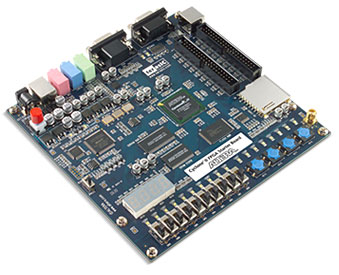

ALU, SRAM and register file

The task for this project was to create an ALU for our computer and our approach to the creation of this component was to first plan out the functionalities and creates the modules that would perform the functions one at a time. Our ALU can perform the no-op, add, subtract, and, or, xor, set-less-than, and shift left logical operations.
the final ALU module must be able to:
- load data and instructions from the SRAM
- transfer data from the SRAM to the register file
- be able to read and interpret the instruction given to it
- perform the requested function
- store the result in the register file
We used verilog to write all of the modules for our ALU, and using signal tap and the quartus environment we tested out module, and in the end confirming that it functions correctly.